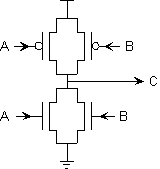

Problem 5.
Anna Logue, a circuit designer who missed several early 6.004
lectures, is struggling to design her first CMOS logic gate. She has
implemented the following circuit:

Anna has fabricated 100 test chips containing this circuit, and has a
simple testing circuit which allows her to try out her proposed gate
statically for various combinations of the A and B inputs. She has
burned out 97 of her chips, and needs your help before destroying the
remaining three. She is certain she is applying only valid input
voltages, and expects to find a valid output at terminal C. Anna also
keeps noticing a very faint smell of smoke.
-
What is burning out Anna's test chips? Give a specific scenario,
including input values together with a description of the failure
scenario. For what input combinations will this failure occur?
-
Are there input combinations for which Anna can expect a valid output at C? Explain.
-
One of Anna's test chips has failed by burning out the pullup
connected to A as well as the pulldown connected to B. Each of the
burned out FETs appears as an open circuit, but the rest of the
circuit remains functional. Can the resulting circuit be used as a
combinational device whose two inputs are A and B?
Explain its behavior for each combination of
valid inputs.
-
In order to salvage her remaining three chips, Anna connects the A and
B inputs of each and tries to use it as a single-input gate. Can the
result be used as a single-input combinational device? Explain.
 What is the correct schematic for the pullup
circuitry?
What is the correct schematic for the pullup
circuitry?